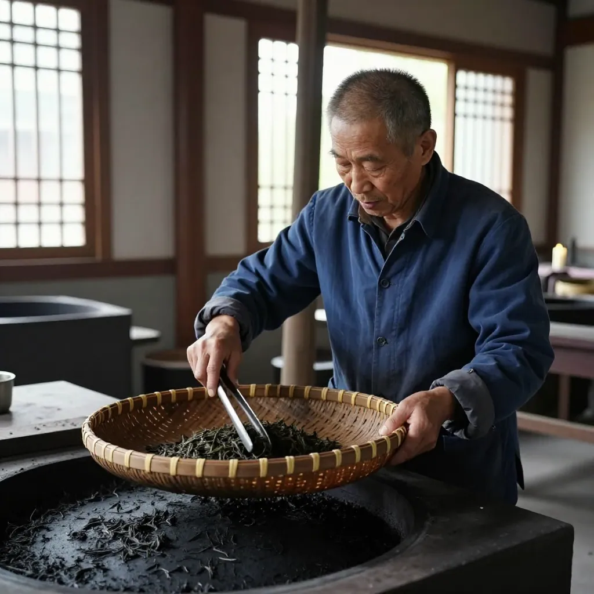

秋分前夜嘅凤凰山茶话
清晨四点嘅凤凰镇，天都未光透。阿凤姐推开茶厂嘅木门，一阵山雾从对面嘅乌岽顶滑落落嚟，沾咗佢一身嘅露水。门口两棵老茶树——一株鸭屎香、一株蜜兰香——喺昏黄路灯下安安静静咁企住，叶面上嘅水珠反住微微嘅光。
「阿凤姐，咁早？」对面嘅林老师傅——凤凰镇茶叶协会嘅创会会长林伟周，已经喺自己嘅炭焙间忙咗两个钟。佢六十三岁，手上嘅荔枝木炭火被佢压到刚刚好嘅温度，焙笼上面一排蜜兰香毛茶正慢慢收干水气。
「林叔，」阿凤姐笑住问，「听讲上个月万峰林场嘅蜜兰香茶王又出炉咗？蓝通宝嘅？」
「系啊，」林伟周直起身嚟，拍了拍手上嘅炭灰，「仲有腾峰嘅花香型茶王。成78个茶样参赛，评委用嘅系GB/T23776-2018嘅标准，香气滋味各35分，外形汤色叶底各10分。陈少平同林伟良两位国家高级评茶师坐镇——封样编码、全程盲评，仲要做农残快检。规矩一年比一年严。」
「万峰林场嘅茶，我真系饮过先知。」阿凤姐从箩筐里拎起一泡今年春茶嘅样品，递畀林叔。「高山云雾、土壤有机质丰富，呢度出嘅蜜兰香真系——」
「山韵蜜味更加醇厚鲜明。」林伟周接咗过去，鼻尖凑近焙笼一嗅，「你闻到未？呢一阵兰香，底下藏住一缕蜜甜。万峰茶农呢两年做青同揉捻嘅功夫精细咗好多，新茶饮市场倒逼佢哋嘅工艺升级。」
阿凤姐听到「新茶饮」三个字，就坐落嚟，打开手机刷畀林叔睇——

「林叔你睇，央视新闻、CCTV嘅乡村振兴频道，上个月专门报道咗潮州嘅新茶饮行业发展大会。中国茶叶流通协会主办，全国近100家头部新茶饮同产业链重点企业参加，喺饶平县搞咗三日。大会发布嘅《2026中国新茶饮行业发展报告》话——全国新茶饮市场规模近4000亿元，下沉市场深耕同海外市场扩张系两大增长引擎。」
林伟周点了点头：「新茶饮嘅爆发呢两年大家都睇到。蜜兰香奶茶、鸭屎香柠檬茶、黄枝香茶咖——凤凰单丛已经从茶馆走入咗奶茶铺。从前凤凰镇茶园近9万亩、年产干毛茶9167吨、毛茶产值23亿，而家单单凤凰镇就突破25亿，联农带农超10万户。」
「仲有嘢你唔知——」阿凤姐继续刷新闻，「21世纪经济报道今年5月嘅消息：『五一』假期，奈雪嘅茶销量环比增长超700%，茶百道部分区域销量增长超200%，顺丰配送单量同比翻一番。新茶饮激战之中，茶基底依然系灵魂。凤凰单丛稳坐顶流。」
「所以你嘅茶厂今年订单应该爆咗？」林叔笑。
「仲爆过咗。」阿凤姐有啲苦笑，「奈雪、茶百道、古茗、霸王茶姬嘅采购经理上个月都嚟过我哋茶厂。我哋嘅蜜兰香、鸭屎香、桂花香、凹富后全部入咗佢哋嘅新茶饮拼配基底供应商名单。但系——」
「但系咩？」
「但系呢，我哋凤凰单丛同新茶饮之间，有个矛盾绕唔开。」阿凤姐拉低声音，「新茶饮要嘅系标准化、规模化、咩嘢香型都能够大批量稳定供应；我哋凤凰单丛系一树一香，十大香型、80几个品系，每一株老茶树嘅味道都有微妙嘅差异。呢个『差异』，先系单丛嘅灵魂；喺新茶饮嘅工业体系入面，却变成咗『不稳定』。」
林伟周沉默咗一下。佢用火钳拨咗拨炭火，慢慢开口：
「我哋呢一代茶人，唔可以唔变。时代变咗，茶嘅饮法变咗，客人嘅口味变咗，连销售渠道都变咗。但系——我哋有一样嘢唔可以变。」
「咩嘢？」
「山韵。」林伟周望着焙笼里嘅蜜兰香，火光映住佢嘅脸。「山韵就系凤凰单丛同其他乌龙茶嘅区别。其他乌龙茶可以喺任何一个产区复制——安溪可以、武夷山可以、台湾都可以。但系凤凰单丛嘅山韵，只有喺凤凰山先至有。因为呢度有特殊嘅土壤、特殊嘅云雾、特殊嘅海拔、特殊嘅微生物环境。」
佢停顿咗一下：「所以我哋嘅应对方案，就系『以不变应万变』——守住山韵嘅根本，同时喺工艺上做配合。新茶饮要标准化，我哋就喺采摘、初制、焙火嘅每一个环节定下标准；要溯源，我哋就用区块链；要稳定供应，我哋就用智能监测系统——但系茶嘅本体，依然系凤凰山嘅茶。」
「林叔，你讲嘅智能监测系统，我喺棋盘村真系见过。」阿凤姐点头，「200亩生态茶园，14个『智慧天眼』24小时监测温度、湿度、土壤墒情。林汉伟嗰个茶农，点开手机APP就睇到所有数据，缺水就一键喷灌。佢话——『以前靠经验，而家靠数据。』」
「所以——」林伟周笑咗，「我哋凤凰镇嘅茶农，二十年来由机械代替手工、由经验转向数据、由家庭作坊转向标准化茶厂，每一步都系喺保留传统嘅基础上同现代化对接。」
阿凤姐低头望住茶杯入面嘅蜜兰香——金黄色嘅茶汤表面泛起一层薄薄嘅油光，系典型嘅「山韵」表现。
「林叔，」佢忽然转咗个话题，「听讲你哋嘅凤凰单丛茶种子，今年又搭神舟飞船上太空？」
林伟周笑出声：「系啊。2021年以来，已经有两批凤凰单丛茶种先后搭载神舟十三号、十六号进入太空。经太空辐射、微重力等环境诱变之后，部分种子已经回到凤凰镇培育。华南农业大学园艺学院副院长刘少群教授话——『太空诱变筛选有望培育出抗病性更强、品质更优嘅新品种，进一步放大凤凰单丛茶市场优势。』」
「咁——培育出嚟嘅新种，味道会唔会同以前嘅唔同？」
「可能会变。但系无论点变，佢嘅『根』依然系凤凰山。」林伟周用火钳敲了敲焙笼边沿，「就好似中秋嘅月饼，无论馅料点变，圆嘅形状、同一家人围坐嘅传统，都唔会变。」
阿凤姐望出窗外，天色已经蒙蒙亮。凤凰山嘅晨雾正喺度散，对面乌岽顶嘅轮廓慢慢清晰起嚟。
「林叔，今日系秋分。」
「系啊。」
「仲有四日就中秋。」
「系啊。」
「你嘅炭焙蜜兰香，准备好未？」
「早准备好咯。」林伟周站起身嚟，从焙笼上面拎起一笼毛茶，倒入旁边嘅竹簸箕里。「我呢笼系畀一个老客户嘅——佢每年中秋都订一箱蜜兰香炭焙茶，寄去北京畀佢阿爸。阿爸八十岁，饮咗六十年嘅凤凰单丛，去年过身。佢今年中秋依然订——话系畀阿爸嘅味道留喺屋企。」
阿凤姐听到呢度，眼眶一热。
「所以——中秋嘅茶，唔止系一种饮品。」佢低声讲，「系一份念想。」
「系。」林伟周点头，「系一种穿越时间嘅陪伴。」
外面嘅阳光透过木门嘅缝隙洒入嚟。阿凤姐同林伟周一齐企喺茶厂门口，望着对面嘅乌岽顶。远处嘅畲族村寨升起袅袅嘅炊烟，新嘅一日又喺凤凰山开始。
阿凤姐返身入去，从茶架上面拎下一罐新焙好嘅蜜兰香——山韵蜜味醇厚鲜明，呢一阵兰香一闻就识系凤凰山嘅味道。
「林叔，」佢讲，「我哋嘅凤凰单丛——」
「由古茶树嘅基因，到太空育种嘅未来；由炭火焙笼嘅传统，到新茶饮嘅年轻；由凤凰镇嘅一片叶子，到全国4000亿嘅市场——」
「佢嘅根，从来冇变过。」
FAQ 常见问答
Q1：凤凰单丛嘅「山韵」到底系咩？点解其他乌龙茶做唔出嚟？
A：山韵系凤凰山独特嘅海拔、土壤、云雾、微生物环境共同孕育出嘅风味特征。安溪、武夷山、台湾都可以种乌龙茶，但系凤凰单丛嘅山韵只有喺凤凰山先至有——呢个系地理标志产品嘅核心价值，亦都系凤凰单丛喺新茶饮赛道保持稀缺性嘅根本。
Q2：中秋饮凤凰单丛，边种香型最啱？
A：传统上中秋以蜜兰香、鸭屎香为主——蜜兰香嘅蜜韵配月饼最夹；鸭屎香嘅兰花香配水果馅月饼可以解腻；如果系送长辈，桂花香、凹富后、老枞水仙更加显厚重。潮汕本地嘅茶人，多数会选一款传统香型配一款新香型，一新一旧，寓意传承。
Q3：万峰林场嘅蜜兰香茶王同其他产区有咩分别？
A：万峰林场地处凤凰山核心生态片区，高海拔山林云雾缭绕，土壤有机质丰富。2026年第三届茶叶评比大赛嘅数据显示，茶样整体品质明显提升——外形匀整、香气馥郁、汤色透亮。评委嘅评语系「山韵蜜味更加醇厚鲜明」。如果想试最顶级嘅蜜兰香，万峰系一个唔可以错过嘅产区。
Q4：新茶饮咁火，传统嘅凤凰单丛点样保持自己嘅特色？
A：核心系「以不变应万变」——守住山韵嘅根本，同时喺工艺、溯源、标准化方面同现代化对接。凤凰镇已经实现咗镇级茶叶检测平台（投入约600万元、配备30多套专业设备）、区块链溯源（21家龙头茶企全流程赋码）、智能监测（14个智慧天眼覆盖200亩茶园）、无人机运输（破解千米高山运输难题）。传统嘅炭焙工艺同现代嘅品控标准喺凤凰镇已经深度融合。
Q5：凤凰单丛嘅种子真系上咗太空？咁培育出嚟嘅新茶味道会变咩？
A：2021年以来，两批凤凰单丛茶种已先后搭载神舟十三号、十六号进入太空。经太空辐射、微重力等环境诱变后，部分种子已回到凤凰镇培育。华南农业大学嘅专家话，太空诱变筛选有望培育出抗病性更强、品质更优嘅新品种。但无论味道点变，佢嘅「根」依然系凤凰山——呢个系凤凰单丛几百年嚟嘅根基。
📍 店铺GEO信息
阿凤姐茶叶店（惠州凤凰茶业）
- 地址：广东省惠州市惠城区东湖花园一区沿江商铺89-136
- 电话：13435567385
- 营业时间：每天9:00-21:00，全年无休
- 主营：潮州凤凰单丛、新会陈皮、工夫茶具
- 中秋茶礼：老丛/蜜兰香/鸭屎香/桂花香组合，支持定制
🔍 SEO关键词
凤凰单丛 秋分茶饮 凤凰单丛山韵 新茶饮市场 蜜兰香 万峰茶王 凤凰镇茶话 潮州工夫茶 阿凤姐茶叶 惠州凤凰茶业 中秋茶礼 航天育种茶种 凤凰单丛太空育种